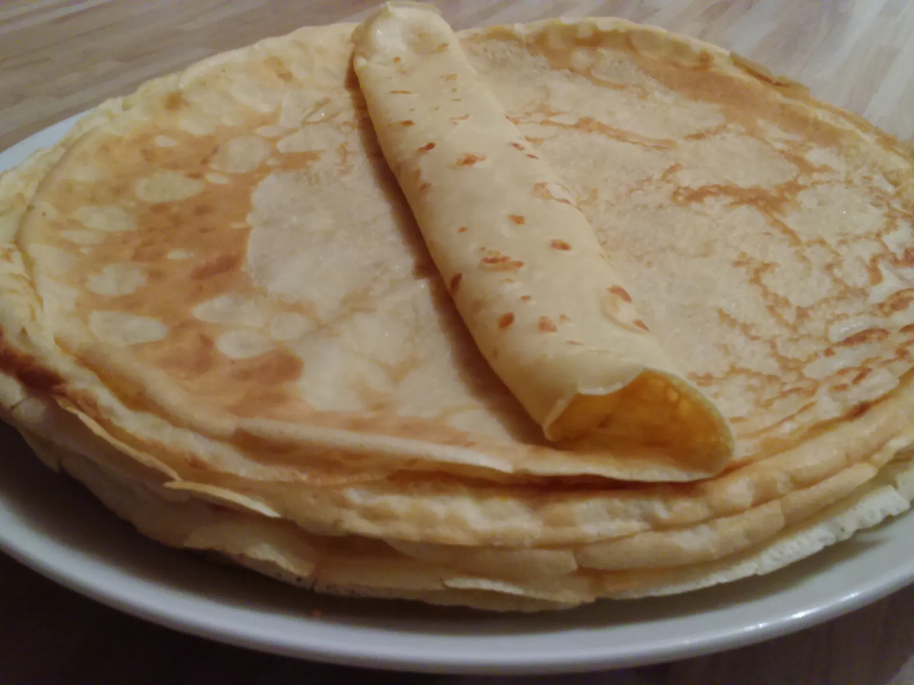

Pancakes
Home

Description
This is a standard pancake recipe, where the key is to whisk the
batter until smooth and cook them in a well-heated pan.
You can use a cup instead of a kitchen
scale for measuring ingredients.
Ingredients
- 2 whole eggs
- 200 g of plain flour
- 200 ml of warm milk
- 200 ml of sparkling water
- 1 tablespoon of oil
- 1 tablespoon of melted butter
- a pinch salt
Steps
- Beat the eggs, then add half of the milk and the flour. Mix until combined.
- Add the remaining milk, sparkling water, oil, melted butter, and a pinch of salt. Gradually add the rest
of the flour, whisking until the batter is smooth and free of lumps.
- Let the batter rest for 20 minutes.
- Lightly grease the pan with a few drops of oil before cooking.
- Repeat this step before each new pancake.
- Pour one ladle of batter into the pan and spread it evenly.
- Cook for about 1-2 minutes, then flip and cook the other side until lightly browned.